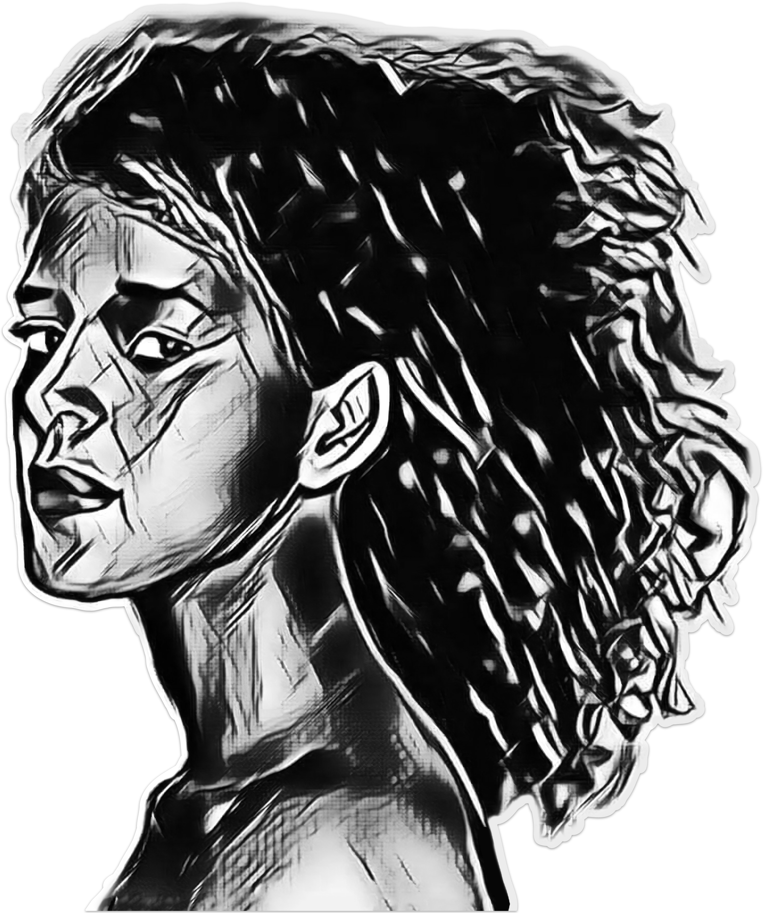

GIGI

Summary
Highly motivated volunteer firefighter with in-depth knowledge of safely suppressing fires. Thinks quickly under pressure and remains calm in stressful situations
Education
Ohio State University, Columbus, OH
2005 -2007 Completed 60 credits toward BA in Psychology
Cherryville High School, Cherryville, OH
Graduated in 2005
Work Experience
Nurse Wellness Hospital, Boise, ID 2001–2014
Managed critically ill patients (20+ on my ward)
Directed new nurses’ training program on practical ventilator function
Cared for 1,000+ patients in ICU and provided pre-operative care
Skills
Google Drive
Microsoft Office
Email
Social media
Award and Certification
Employe of the month from Health Organization
Other
My Hobbies
Contact Me
© Ejegayehu Sehbabawe All rights reserved ®😄